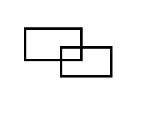

原文连接:https://www.cnblogs.com/Lanly/p/11193743.html
平面上有若干个矩形，求矩形相互覆盖的面积。为方便起见，矩形的边均平行于坐标轴。

我们根据容斥原理，矩形相互覆盖的面积即为所有矩形的面积和减去所有矩形所覆盖的面积即可。
而现在问题是如何求得所有矩形所覆盖的面积。即
让我们人类去做，由于这是个由矩形拼接成的多边形，很难去直接求它的面积，求该图形的面积一个常规的方法就是割补法。
此处我们采用割，割成一个一个矩形出来。
这样就很方便地去求了。
计算机无法直观地看出图形，进而去求出长宽进而求出矩形面积。
那该如何让计算机来求？
我们看这些图形，一块一块的，最下面的一块，可以想象成原矩形
下面矩形最下面的边，向上平移时“刷”出来的紫矩形，当碰到上面矩形的底边时，两条边合并，再向上平移时“刷”出红色矩形，然后碰到下面矩形的顶边，去掉了顶边对应的底边，因为两边重合的部分有两条边贡献，所以去掉顶边线段后，重合部分还在，继续向上平移，“刷”出了蓝色矩形。
有序，易行，计算机可做！
其实这就是扫描线在干的事，一条透明的线从下向上平移，遇到底边，则扫描线在底边所在的范围有了颜色，这样向上平移的时候就“刷”出了颜色，遇到顶边，则扫描线在顶边的范围就没了颜色，之后该部分就没有颜色了。
所以现在的问题是，如何维护扫描线。
即我们要维护，扫描线有底边贡献的范围，以及该范围被几条底边所贡献，且当遇到顶边时要把相应底边的贡献去掉。
很显然，当底边两端点的坐标为实数，或者坐标范围很大时，直接维护点坐标是不现实的。
实数怎么办？范围很大怎么办？
离散呀！
我们注意到，所有矩形顶点的横坐标，其实是把x轴分成了若干个区间。
而任意一个矩形的底边，只是会覆盖若干个区间，而不会只覆盖某区间的一部分。
那我们就可以维护区间，从而避开了实数的无穷个数和范围大造成数据冗余以及内存爆表的问题。
当我们遇到一个矩形的底边时，只需在底边所覆盖的若干个区间加一，即贡献一个底边。
而在遇到一个矩形的顶边的时候，在顶边所覆盖的若干个区间减一，即去除该矩形底边的贡献。
最终，只要有底边有贡献的区间，都是扫描线“有颜色”的范围。
这里涉及到了区间加，区间减以及区间查询。
拿什么维护呢。
当然是线段树啦。
所以，
根据边的x坐标划分离散x轴的区间，
拿线段树去维护区间，
把边按y轴从小到大排序，自1到n即自下而上扫描，
不断更新扫描线的有颜色的范围长度，再乘以上下两边的y轴的数值差，即为此部分扫描的面积。
重复即可。
离散的写法有好多，这里运用STLl较为简便的写法。
注意离散后也要能映射回去。
Description
Input
The input file is terminated by a line containing a single 0. Don't process it.
Output
Output a blank line after each test case.


1 #include <algorithm>
2 #include <cstring>
3 #include <cstdlib>
4 #include <cstdio>
5 #include <iostream>
6 #include <cmath>
7 #include <ctime>
8 #include <queue>
9 #define N 200
10 using namespace std;
11 struct seg{ //边
12 double l,r,h;
13 int d;
14 seg(){}
15 seg(double xx,double yy,double hh,int dd):l(xx),r(yy),h(hh),d(dd){} //初始化函数
16 bool operator < (const seg &a) const{ //重载运算符，使其能够进行快排
17 return (h<a.h);
18 }
19 }s[N*2];
20 struct tree{ //线段树
21 int mark; //mark记录底边对区间的贡献
22 double sum; //sum记录底边贡献的范围
23 }t[N*10];
24 int n,ll,rr,num,size,qwq; //qwq
25 double ans,rank[N*10]; //rank做离散用
26 void readint(int &x){
27 x=0;
28 char c;
29 int w=1;
30 for (c=getchar();c<'0'||c>'9';c=getchar())
31 if (c=='-') w=-1;
32 for (;c>='0'&&c<='9';c=getchar())
33 x=(x<<3)+(x<<1)+(c^'0');
34 x*=w;
35 }
36 void readlong(long long &x){
37 x=0;
38 char c;
39 long long w=1;
40 for (c=getchar();c<'0'||c>'9';c=getchar())
41 if (c=='-') w=-1;
42 for (;c>='0'&&c<='9';c=getchar())
43 x=(x<<3)+(x<<1)+(c^'0');
44 x*=w;
45 }
46 void pushup(int root,int ll,int rr){
47 if (t[root].mark) t[root].sum=rank[rr+1]-rank[ll]; //离散后的数字映射回原来的数字
48 else if (ll==rr) t[root].sum=0;
49 else t[root].sum=t[root<<1].sum+t[root<<1|1].sum;
50 }
51 void updata(int l,int r,int d,int root,int ll,int rr){
52 if (l<=ll&&rr<=r){
53 t[root].mark+=d;
54 pushup(root,ll,rr);
55 return;
56 }
57 int mid=(ll+rr)>>1;
58 if (l<=mid) updata(l,r,d,root<<1,ll,mid);
59 if (r>mid) updata(l,r,d,root<<1|1,mid+1,rr);
60 pushup(root,ll,rr);
61 }
62 int main(){
63 qwq=0;
64 while (true){
65 ++qwq; //qwq只是情况记录的个数qwq
66 num=0;
67 ans=0;
68 readint(n);
69 if (n==0) return 0; //应题目要求
70 for (int i=1;i<=n;++i){
71 double x1,y1,x2,y2;
72 scanf("%lf%lf%lf%lf",&x1,&y1,&x2,&y2);
73 s[++num]=seg(x1,x2,y2,1);
74 rank[num]=x1;
75 s[++num]=seg(x1,x2,y1,-1);
76 rank[num]=x2;
77 }
78 sort(rank+1,rank+1+num);
79 sort(s+1,s+1+num);
80 size=unique(rank+1,rank+1+num)-(rank+1); //去重,size为去重后点的个数，为离散做准备
81 s[num+1].h=s[num].h; //小细节，只为下面i循环后mark能清零且不会在i=n时对结果造成影响
82 for (int i=1;i<=num;++i){
83 ll=lower_bound(rank+1,rank+1+size,s[i].l)-(rank+1)+1; //这里左边第一个点标号为1，其点右边第一个区间标号也为1
84 rr=lower_bound(rank+1,rank+1+size,s[i].r)-(rank+1); //离散，ll,rr为边覆盖的最左区间和最右区间的标号
85 updata(ll,rr,s[i].d,1,1,size-1); //植树原理，一条直线，两头植树，n个点，n-1个区间
86 ans+=t[1].sum*(s[i+1].h-s[i].h); //长乘宽
87 }
88 printf("Test case #%d\nTotal explored area: %.2f\n\n",qwq,ans);
89 }
90 return 0;
91 }
什么？你说4+2第一天那道绝地求生，有若干个圆形辐射区，问安全区的面积怎么用扫描线扫？
那听说是道圆的面积并的模板题，但本蒟蒻还不会……